A clear place to ask for practical support, book time, or get pointed to the right local workbench.
Earlier research · a possible shared workspace
What could a community workspace offer?
This earlier proposal used 9 Ballow Road in Dunwich to explore a place where people could learn, make things, share equipment and run community activities. The photos and drawings explain the idea. Ready SETCO has no confirmed venue or lease here, and this page does not offer room bookings.
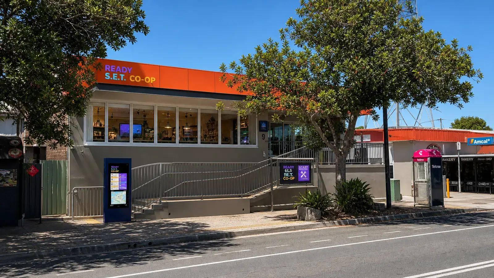
Why this place matters
A front door near the island's arrival point.
The earlier research considered this location because residents, workers and visitors pass through Dunwich near the ferry. A shared workspace could offer a place to ask for help, learn together or borrow agreed equipment.
Status check, 15 June 2026: public listing material for Unit 1/9 Ballow Road describes approximately 140 square metres, eight secure common rear car parks with loading area, automatic sliding doors, ramp and stair access, ducted air-conditioning, amenities, and a trade-waste/grease-trap setup. The listed rent and availability can change, so any real commitment is best made against the live listing.
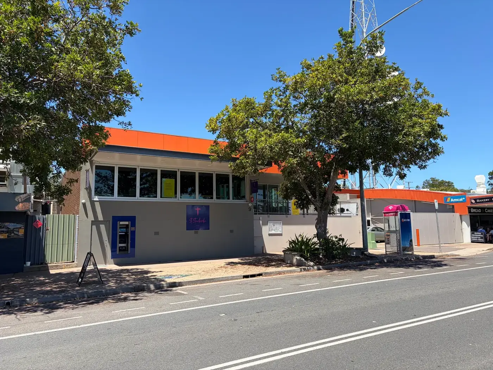
Actual reference views
Photos used in the earlier research.
These supplied views anchor the concept: street frontage, accessible entry, open main room, wet/prep area, rear service yard and the recorded footprint. They are reference images, not promises about lease terms or approved use.
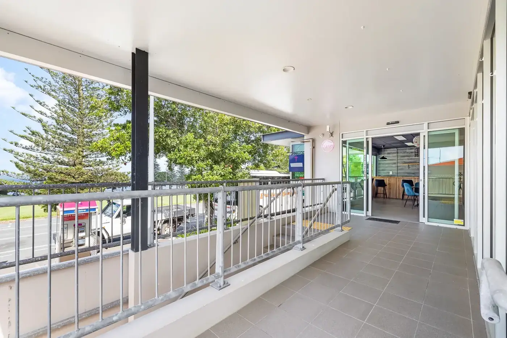
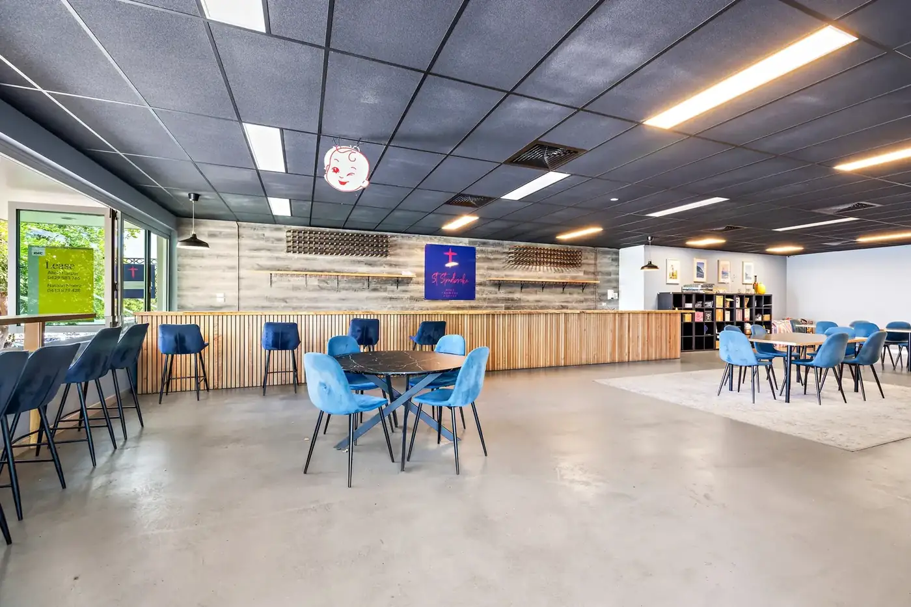
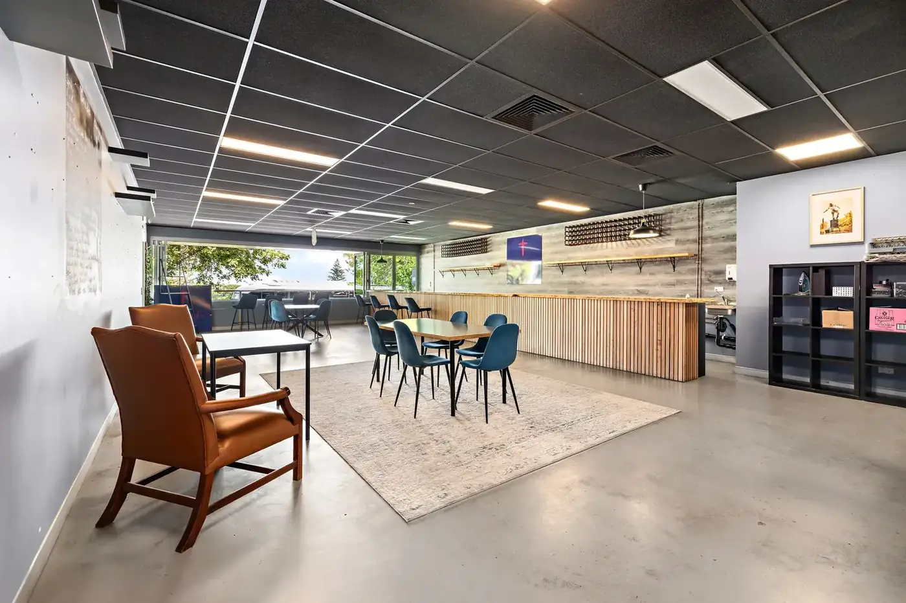
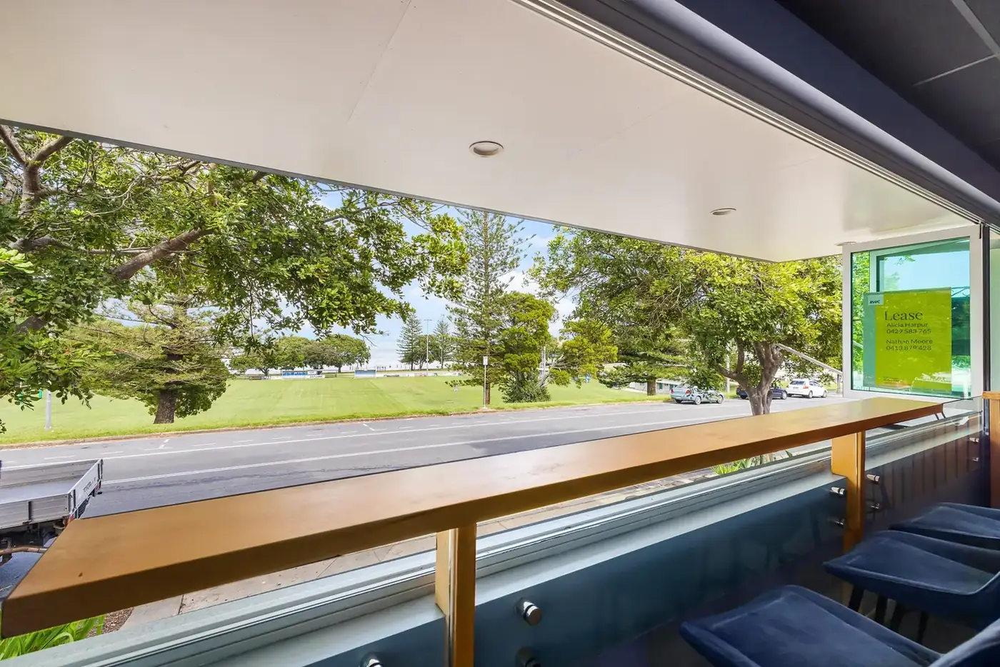
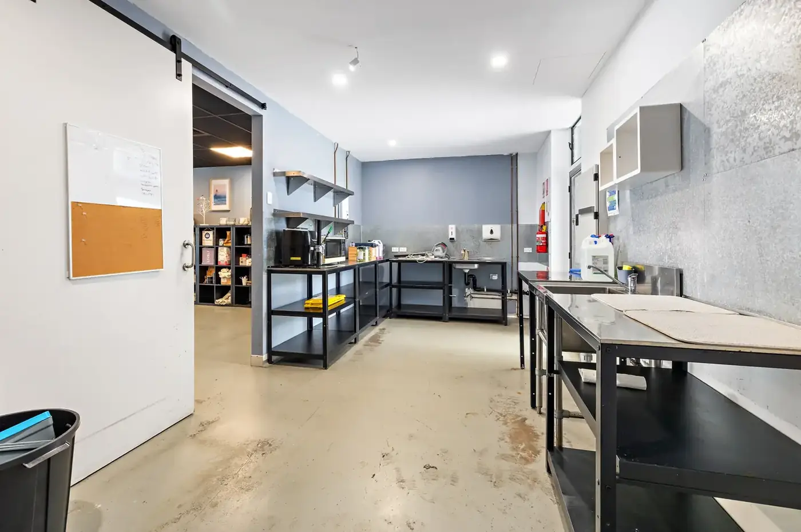
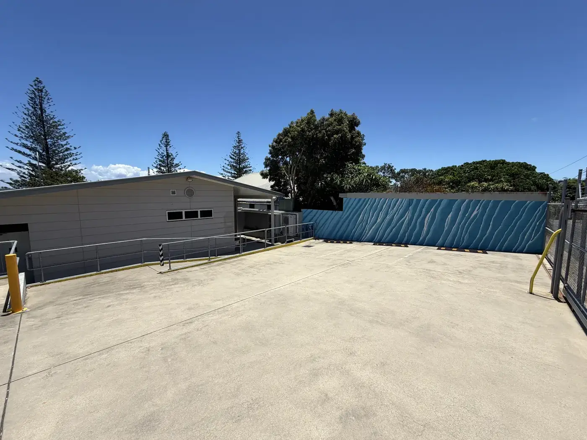
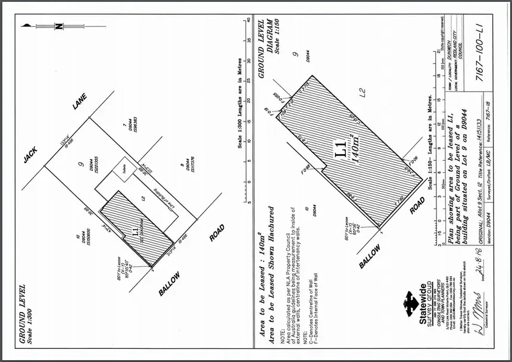
Potential internal fit-out
A room for learning, repairs and making things.
This earlier concept brings tools and practical help into a shared workshop, with a repair bench, equipment storage, computers, a 3D printer and a desk for media work. The image shows a possible fit-out, with no approved layout or installation.
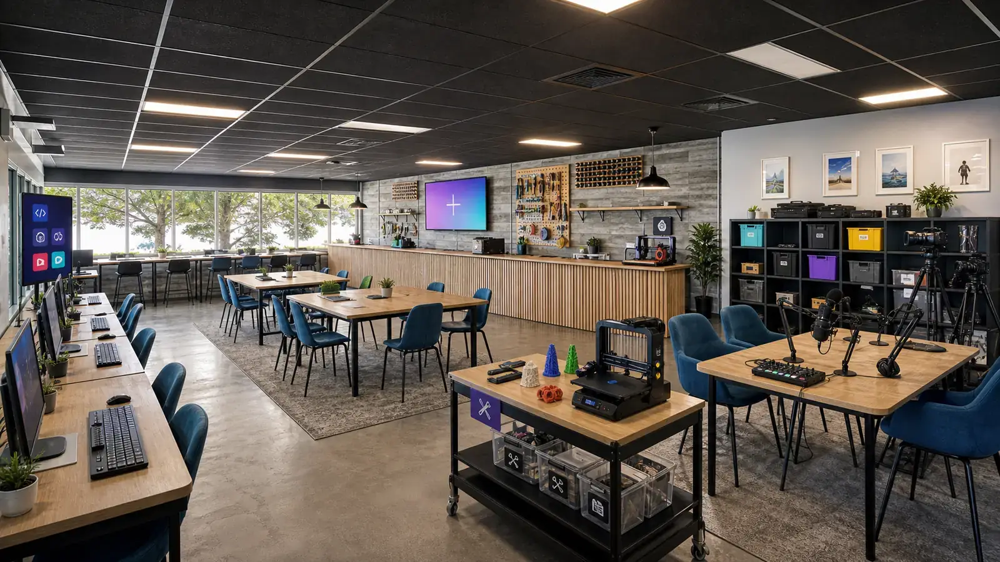
Generated concept conversions
What the same place could start to hold.
These generated images explore possible uses for the photographed rooms: a shared entrance, media and workshop tools, food-preparation teaching and equipment storage. They show ideas to discuss, rather than approved work.
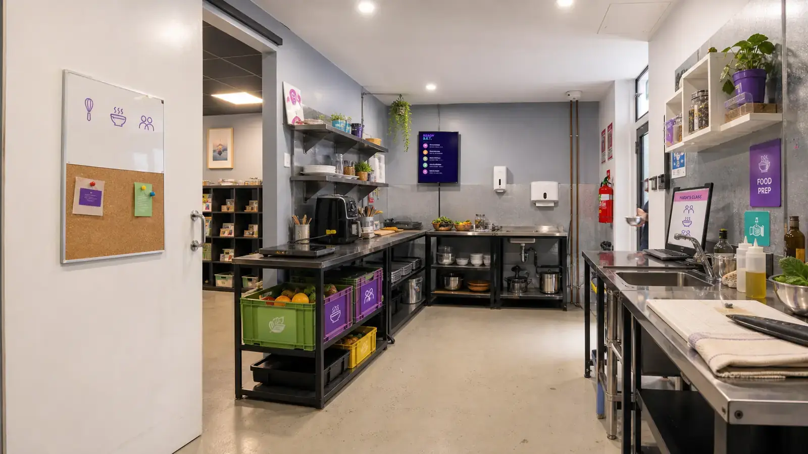
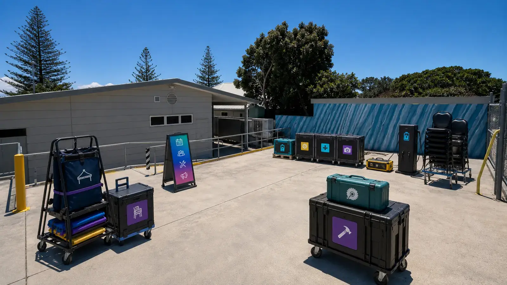
Possible uses
Rooms that can teach while they work.
These examples show what a shared workspace might support. Together, we would need to choose the activities, secure a suitable venue and agree the costs, permissions and supervision.
Earlier ideas called Shared Table and DIG for Australia explore food growing, cooking and learning together. Any kitchen activity would need a suitable space, safe practices and relevant permissions.
Film club activity can connect cameras, sound, screenings, consent, story prompts and learners into one visible cultural doorway.
A practical bench for phones, laptops, microphones, tripods, printers, scanners, QR codes and AI assisted builders.
A microphone, quiet space and guidance could help people record local stories, add captions and agree what may be shared publicly.
Local teachers, visiting trainers and skilled residents can run short practical sessions that turn real work into shared capability.
A simple register for microphones, tripods, projector gear, screens, chargers and event kits when trust allows.
Turn local activity into public-safe notes, quotes, images, budgets and grant-ready support material.
Host early conversations about distributing co-operative structure, roles, duties and what local businesses need.
Public evidence links
9 Ballow Road listing trail.
These links were used to research the earlier venue idea. Listing details may have changed. Check with the agent before relying on availability, price or permitted use.
Realcommercial: Unit 1/9 Ballow Road lease listing
RWC Bayside: Unit 1/9 Ballow Road listing and photo gallery
Realcommercial: North Stradbroke Island lease search showing Unit 2/9 Ballow Road
Realcommercial: older 9 Ballow Road leased/sale history page
Straddie Maker-Space Lab: fit-out and tool-sharing pathway
What happens next?
Choose the need before committing to a venue.
The cooperative is still forming. Together, we can decide whether a shared workspace would be useful, which activities matter and what costs and responsibilities would be manageable.